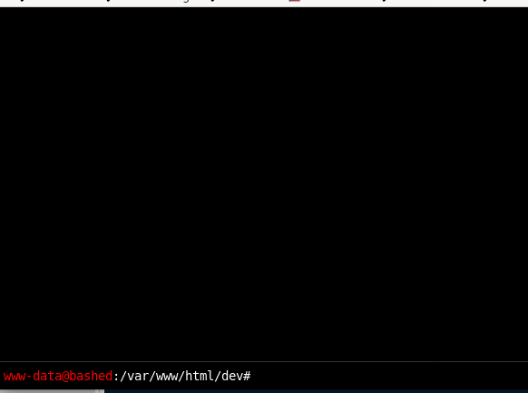

dev/phpbash.min.php

checking out phpbash.php, we see that the webserver spawns an interactive shell for us to play around with! however, it is slightly limited if we look back at the phpbash.php source code, so lets call a shell back to our attack machine so we can work with a fully functional shell
